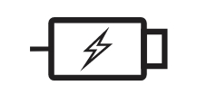

Follow the steps below to install the application:
Step 1: Ensure that the Type-A connector is plugged into your computer’s main unit, and the Type-C connector is inserted into the port on the device where the video icon is located.
Step 2:
Step 3:
After installation: Remove the Type-C connector and insert it into the port on the side of the device that has a battery icon. 
You’re all set—go ahead and start using the device!